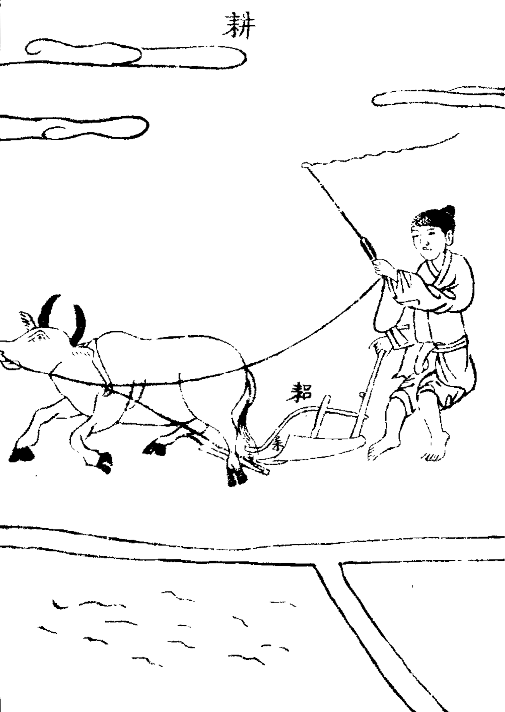
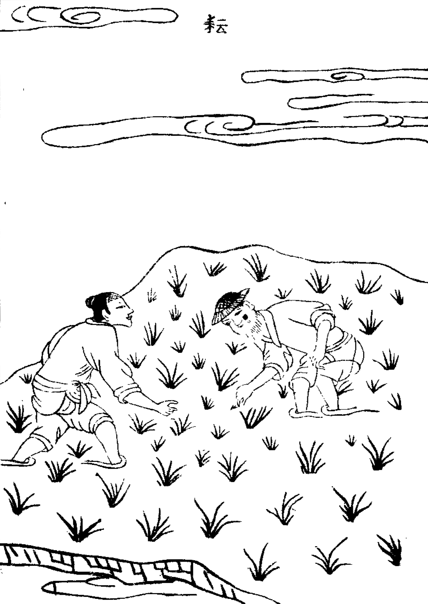
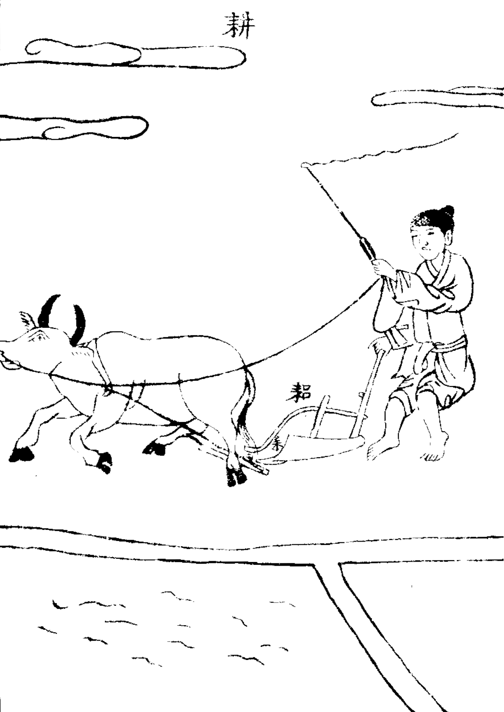
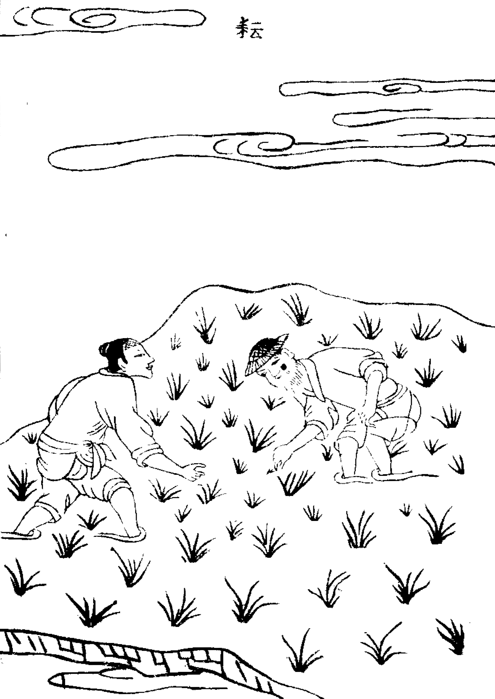

标题 大玄古籍制作软件【详细教程18：插图背景透明化】
#标签 微软技术》window,开发工具》github,编辑器。非IT技术》学习，软件工程》个人开发
总有人私下问我【大玄古籍制作工具】怎么用，可不可以试用。可这又不是一两句话说得清楚。所以出个教程吧
首先.打开大玄古籍制作软件
https://daxuanguji.github.io/book_php_html/index.html
以下以实例说明使用
程序是支持透明png的
插图png图片是透明的输出也是透明的
但是很多时候图片并不是透明的;若插入书籍显得不好看
下面主要讲透明不透明的jpg和png图片
一 透明rgb值相同的灰度图片
透明rgb值相同的灰度图片
此例透明rgb=255的白底图片
【天工開物_上21.png】
【天工開物_上22.png】
|  |  |
|---|
默认ptset.bodyobj.pcolor[5]=-1时效果
【04.png】

设置ptset.bodyobj.pcolor[5]=255
【03.png】

透明背景勾选打开插图色
设置ptset.bodyobj.pcolor[5]=255时透明白底效果
【05.png】

【06.png】

可以看到上图虽然白色透明了；但是效果并不是很好
这是由于有此颜色看似白色但是并不是纯白。所以无法透明
那怎么解决此问题，这就用到前面提到的透明度设置了
将图片先用ps，fw批量生成以灰度通道透明图片
这里提供-个Fireworks脚本：
fw.getDocumentDOM().cloneSelection();
fw.getDocumentDOM().filterSelection({ EffectMoaID:“{d2541291-70d6-11d1-8c8000a024cdc039}”, MB_filter_preview_tile_size:“-1 -1” });
fw.getDocumentDOM().selectAll();
fw.getDocumentDOM().group(“mask to image”);
将上面内容保存为MyBookPicTM.jsf放到Fireworks的Commands文件夹下；
我这是C:\Users\dell\AppData\Roaming\Adobe\Fireworks CS6\Commands
然后运行Fireworks》文件》批处理》选择文件夹》添加全部》继续》命令》MyBookPicTM》添加》导出》添加》设置下拉列表》png32》继续》勾选备份》批次》ok等待完成目录里即是通道透明图片了【Original Files目录里是原图片备份】
批处理生成图片
【TM天工開物_上21.png】
【TM天工開物_上22.png】
|  |  |
|---|
图片已透明关闭插图色不勾选
【07.png】

由于上图是白色背景。通道透明后没问题了；
二 透明通道透明图片
下面@个有问题的：背景不是纯白；通道透明后是半透效果的图片
此例通道透明图片
【山海经广注_10_r.png】
【山海经广注_11_l.png】
操作运行后效果
【08.png】

可以看到上图片通道抠图是保留了透明度的因此图片像蒙上一层透明膜;一看就是贴图
透明背景勾选打开插图色
设置ptset.bodyobj.pcolor[5]=295时透明透明度<40效果
【09.png】

三.相关教程
大玄古籍制作软件【详细教程20：txt文档config自动化配置】
大玄古籍制作软件【详细教程19：设置文字色插图色】
大玄古籍制作软件【详细教程18：插图背景透明化】
大玄古籍制作软件【详细教程17：设置字符使用方法】
大玄古籍制作软件【详细教程16：目录字符使用方法】
大玄古籍制作软件【详细教程15：插图字符使用方法】
大玄古籍制作软件【详细教程14：字体字符使用方法】
大玄古籍制作软件【详细教程13：间距字符使用方法】
大玄古籍制作软件【详细教程12：双列字符使用方法】
大玄古籍制作软件【详细教程11：角标字符使用方法】
大玄古籍制作软件【详细教程10：标注字符使用方法】
大玄古籍制作软件【详细教程9：连线字符使用方法】
大玄古籍制作软件【详细教程8：分页字符使用方法】
大玄古籍制作软件【详细教程7：括号字符使用方法】
大玄古籍制作软件【详细教程6：注释字符使用方法】
大玄古籍制作软件【详细教程5：标点字符使用方法】
大玄古籍制作软件【详细教程4：位移字符使用方法】
大玄古籍制作软件【详细教程3：空格字符使用方法】
大玄古籍制作软件【详细教程2：换行字符使用方法】
大玄古籍制作软件【详细教程1：如何快速制作一本古书】
大玄古籍制作软件【视频教程】